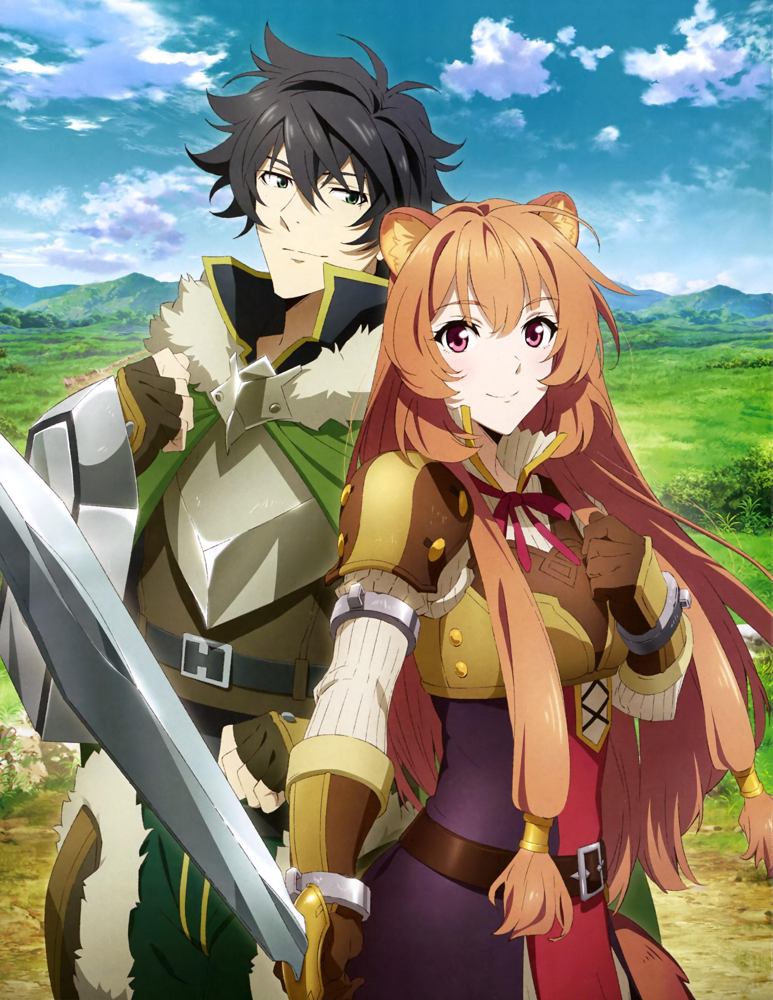

Tate no Yuusha no Nariagari
Synopsis: The Four Cardinal Heroes are a group of ordinary men from modern-day Japan summoned to the kingdom of Melromarc to become its saviors. Melromarc is a country plagued by the Waves of Catastrophe that have repeatedly ravaged the land and brought disaster to its citizens for centuries. The four heroes are respectively bestowed a sword, spear, bow, and shield to vanquish these Waves. Naofumi Iwatani, an otaku, becomes cursed with the fate of being the "Shield Hero." Armed with only a measly shield,  Naofumi is belittled and ridiculed by his fellow heroes and the kingdom's people due to his weak offensive capabilities and lackluster personality. When the heroes are provided with resources and comrades to train with, Naofumi sets out with the only person willing to train alongside him, Malty Melromarc. He is soon betrayed by her, however, and becomes falsely accused of taking advantage of her. Naofumi then becomes heavily discriminated against and hated by the people of Melromarc for something he didn't do. With a raging storm of hurt and mistrust in his heart, Naofumi begins his journey of strengthening himself and his reputation. Further along however, the difficulty of being on his own sets in, so Naofumi buys a demi-human slave on the verge of death named Raphtalia to accompany him on his travels. As the Waves approach the kingdom, Naofumi and Raphtalia must fight for the survival of the kingdom and protect the people of Melromarc from their ill-fated future.
{kind=link}
Review: The complaint is that, by showing this, the anime sends the message that similar allegations are not to be believed in real life. True anime fans, however, are able to understand what message an anime is actually trying to send to its audience. This anime sends a message of condemnation to advantage-seeking liars, as well as a message of sympathy to any dismissed and silenced truth-tellers. It shows the pain of trusting others, only to be vilified and doubted more for each truth you tell. The message comes through the MC, a man, because that's who should hear it. There is also a lot of talk about played stereotypes. There's a reason anime has formed tropes and traditions, and the reason is you: the fan. Stereotypes and predictable banter is the anime world's way of telling you: "You're one of us; let's laugh and cry together" Don't let others shame you for appreciating the welcoming arms of anime culture. For many, this is the one culture left that we can feel a part of. Finally, this anime does in fact have some interesting aspects. The mechanics of the MC's weapon, the origin of the enemy, the intent of the other heroes, and the character progression of the two main characters. The animation quality is good, and, probably most telling of all, time flies by too fast when watching it. However, if you find yourself on the fence with anime, then you're probably not ready for this one yet. This is my review on shield hero! Hope you enjoyed reading my review on it!